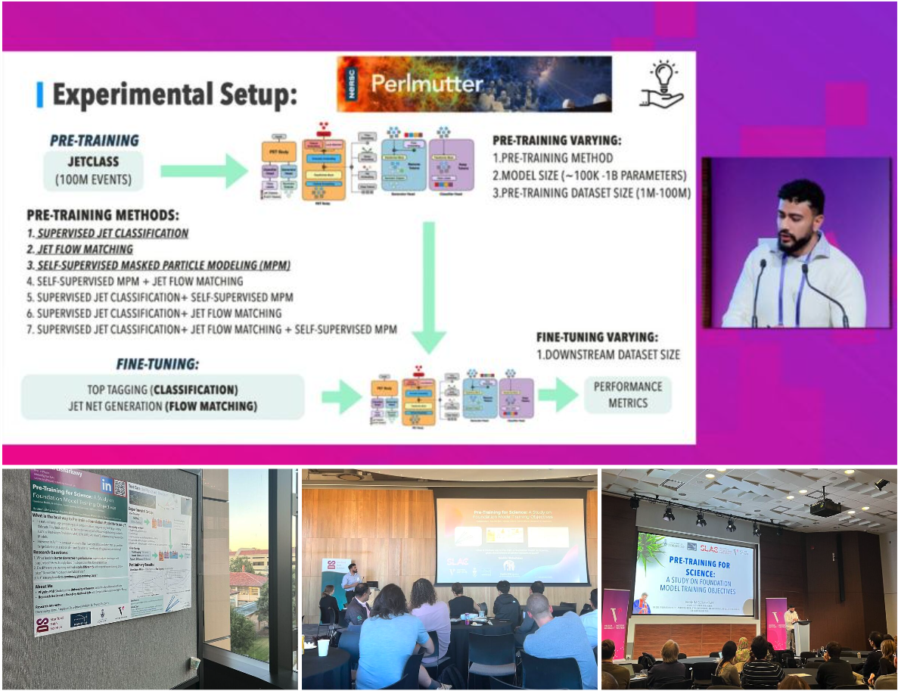
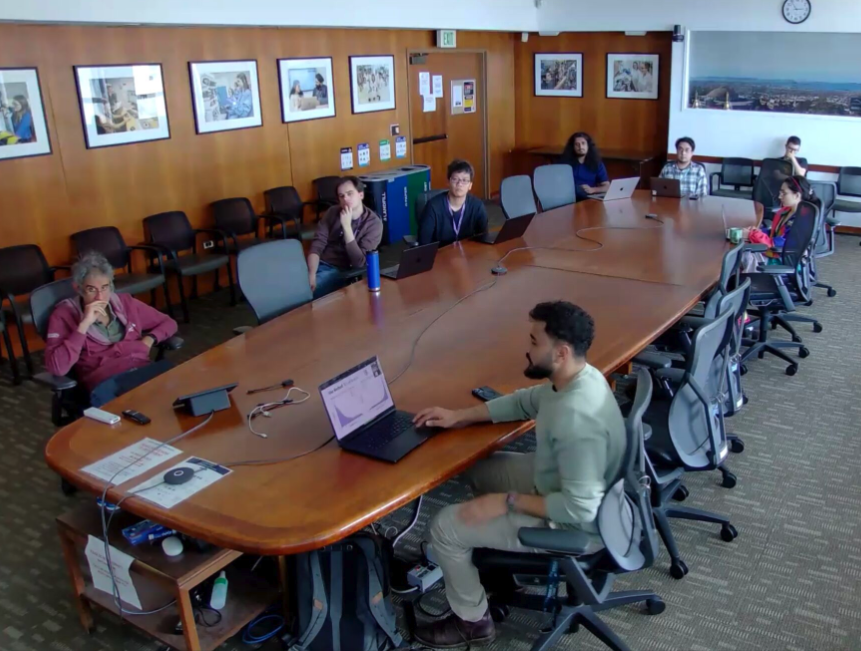
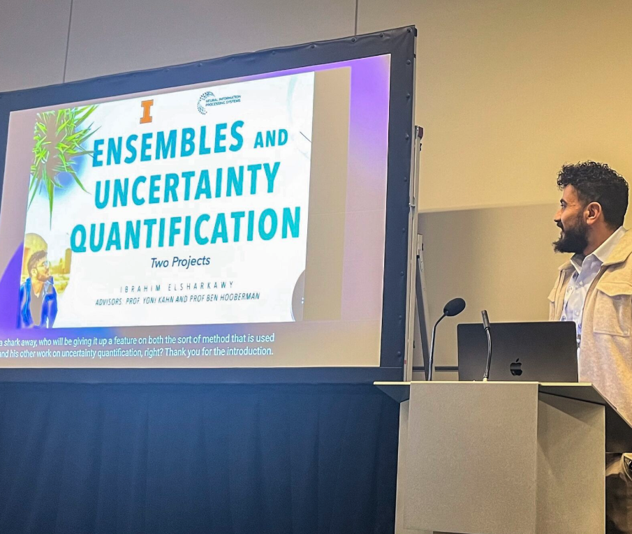

Physicist &
ML Researcher
PhD candidate studying generative models for physical systems and building foundation models for science.
University of Toronto · Vector Institute · Berkeley Lab (NERSC)
PhD advised by Yoni Kahn, committee: David Curtin & Chris Maddison
NERSC advised by Wahid Bhimji · Benjamin Nachman · Aishik Ghosh
Physics for AI, AI for Physics.
1st place, NeurIPS Higgs ML Challenge · NSERC CGRS-D · Connaught Fellow

Select Papers
-
arXiv preprint, 2026
-
arXiv preprint, 2026
-
The Omni family: cross-domain scientific foundation modelsTransferring particle-physics knowledge to molecular dynamics and cosmology.
-
arXiv preprint, 2025
-
Machine Learning: Science and Technology, vol. 6, no. 3, 2025
News
-
Jun 2026
NERSC AI4Sci proposal accepted: awarded 7,000 GPU compute node-hours
-
Jun 2026
FAIR Universe Weak Lensing ML Uncertainty Challenge accepted to NeurIPS 2026
-
Jun 2026
Released Pre-Training for Simulation-Based Science (paper + code)
Talks at Vector Institute & Stanford Data Science
-
Apr 2026
Awarded the NSERC Doctoral Canadian Graduate Research Scholarship (CGRS-D)
-
Feb 2026
Guest lecturer for “The Physics of Machine Learning” at the University of Toronto
-
Jan 2026
Released OmniMol (first-author) and OmniCosmos preprints
-
Sep 2025
HiggsML Uncertainty Challenge accepted to NeurIPS 2025; first-place prize (ex aequo) at CERN
Talk at the CERN IML Machine Learning conference
-
May 2025
Released the Contrastive Normalizing Flows preprint
Invited talks at MIT IAIFI, ExxonMobil & Berkeley Lab
-
Mar 2025
Awarded the University of Toronto Connaught International Fellowship
-
Dec 2024
Invited talk on the first-place Higgs solution at NeurIPS 2024; NeurIPS Milestone award
Poster at the ML & the Physical Sciences (ML4PS) workshop
Research Focus
Physics Data for Understanding ML
Leveraging the controllable generation and known symmetries of physics datasets to probe the internal mechanisms of deep neural networks.
Physics-Inspired Theory for Scaling Laws
Using effective field theory to predict neural-network ensemble behavior and derive uncertainty scaling laws without training an ensemble.
Automating Scientific Model Building
Developing ML for “theory inversion”: parameter estimation with uncertainty quantification, simulation emulation, and automated theory writing.
Cross-Domain Foundation Models
Foundation models for scientific point clouds that transfer knowledge across particle physics, cosmology, and molecular dynamics.